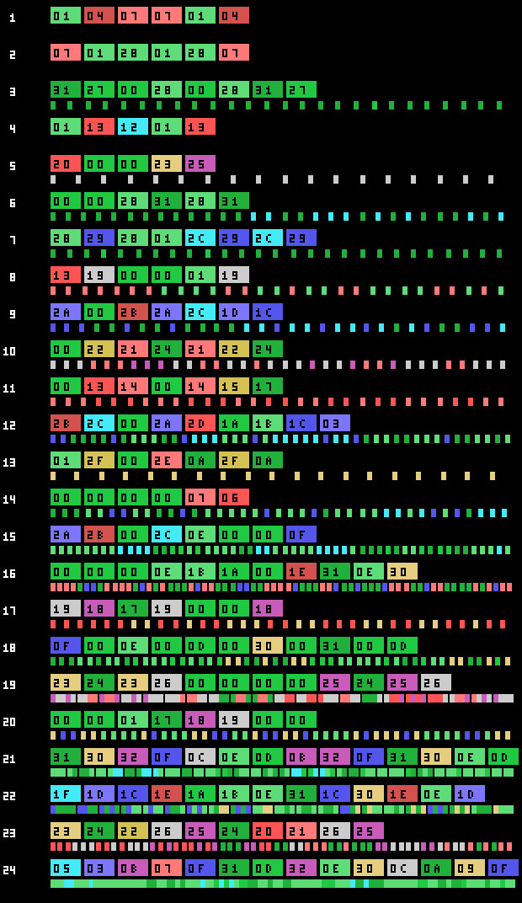
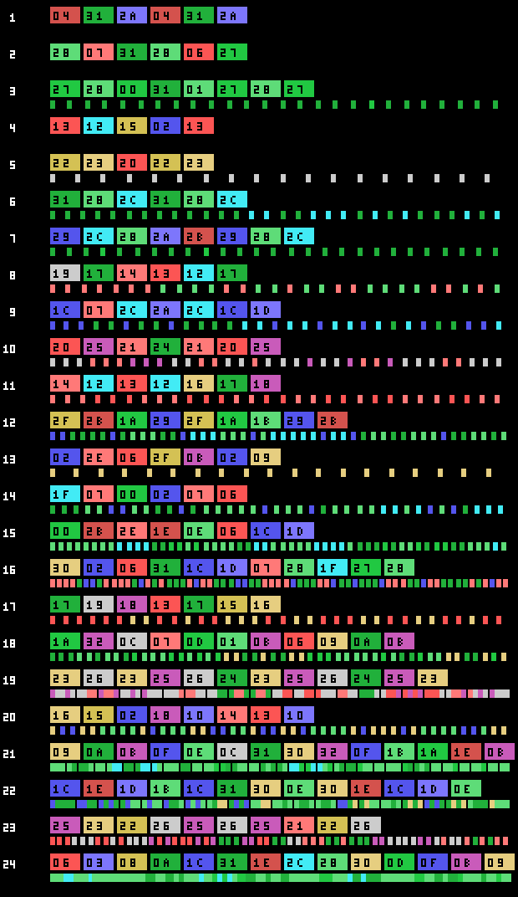
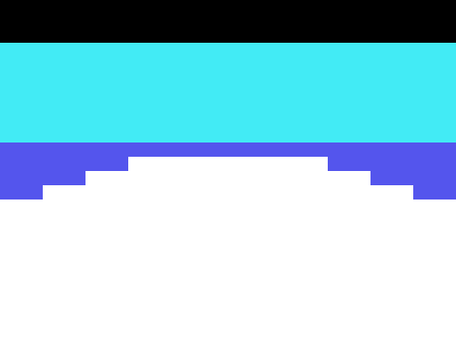

The game
Penguin Adventure (夢大陸アドベンチャー, Yume Tairiku Adventure) is the sequel to Antarctic Adventure, and it grows from a 32 KB cartridge to 128. The penguin runs into the screen, dodges what comes at him and has to reach the goal before the clock runs out.

There are two title screens and the cartridge picks one from the BIOS country byte (0x002B). The difference is one extra script, 0xA463, and it only touches the lettering: the background picture is the same.
Twenty-four stages, not thirteen
The cartridge declares thirteen to the Konami Game Master in its second header, the one at 0x4010. The game says otherwise: p02:8328 compares the stage with 0x19 and the three script tables —terrain, creatures and the third one— close at exactly twenty-four entries.

Each row is a stage. The coloured blocks are its terrain sections in the order they come, and the marks below are the creatures the script spawns. The first three stages spawn none: their script is a bare 0xFF.
The title menu lets you pick between LEVEL 1 and LEVEL 2, and that choice does not change how hard a section is: it changes all twenty-four routes. They are two different terrain tables in bank 10 —0x8000 and 0x80F9— and p01:675B picks with 0xE08F, which is the copy p02:813B makes of 0xE082 when the game starts. Not one section matches byte for byte between them.

Ten backdrops
The terrain is built from ten backdrops, each with its characters —three loads, one per third of the screen— and 672 bytes of name table that p01:6000 decompresses at 0xEBE0.

Backdrops 8 and 9 are used by none of the twenty-four stages: p03:B602 and p03:B932 set them by hand for two interludes.
The clock, which runs on its own
0xE08B is the time, and it drops by one every 32 frames whether you move or not (p02:922D). Below 0x15 it beeps every other frame, and when the stage ends p02:94D1 turns it into points 0x20 at a time.
What goes down with the terrain is something else, 0xE08D, and the nine end-of-stage cues come from it: at 0x30, 0x25, 0x20, 0x15, 0x10, 8, 5, 2 and 0 from the goal, something different happens (p01:65CF).
The shop and the gambling machine
Between stages there are two places to spend your points.
The shop has six two-byte slots —what it is and what it costs—, a cursor that moves left and right with sound 0x23, and the score acting as money. Buying subtracts in BCD; if you cannot afford it, sound 0x25 plays and nothing happens.
And the gambling machine:

You bet by moving money between the score and a purse —up and down one at a time, left and right ten at a time—, the three reels spin and the stake is multiplied by whatever comes up. The payout table is painted on the machine itself, and it says exactly what the code says.

The cherry takes five of the sixteen slots in the table at 0x7B34, so it comes up 31.2 % of the time per reel. And it is the only symbol that counts on its own: one pays ×1, two ×2 and three ×4. The others pay only in threes —×8, ×10, ×15, ×20 and the jackpot—. At least one cherry shows on 67.5 % of the spins.
What you carry
Five slots at 0xE440, and what they hold decides whether a hit kills:
| what you carry | what it saves you from |
|---|---|
| 0xE1F1 | everything: any hit and any hole |
| 0xE164 | creature classes 6 and 12; one is spent per hit |
| 0xE165 | classes 1 and 13; one is spent per hit |
| 0xE170 | classes 5 and 14; this one is not spent |
| 0xE163 | class 6 of the other creature slots |
| 0xE16B | class 4, which does not kill: it only freezes the game for 0x80 frames |
And the holes in the ground —the class 14 objects— cost a life unless you carry 0xE1F1, 0xE171 or 0xE172. With 0xE1F1 you not only do not fall: the hole changes variant and 768 points drop in.